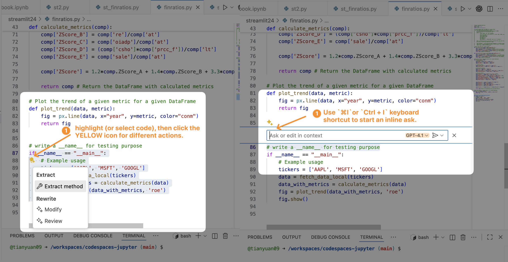
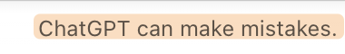

4 VS Code with Copilot Chat
4.1 A Quick Recap: VS Code, Colab and Your Python Environments
You have used VS Code with Copilot in Github codespaces to develop a dashboard app. Let’s recap on a few basics based on your experience.
Each Github Codespace runs on a Linux virtual machine that already has tools like Python, Jupyter Notebook support, various packages, and VS Code (via the web interface) preinstalled. When you open a Codespace, you’re actually using VS Code running in your browser, connected to that remote Linux machine. So:
- Codespaces = a Linux system in the cloud + Python + JupyterLab + various Python packages + VS Code (IDE interface).
Each Google Colab notebook, on the other hand, also provides a Linux-based environment with Python and Jupyter Notebooks, but it doesn’t include VS Code.
- Colab = a Linux system in the cloud + Python + JupyterLab + various python packages.
VS Code is a Microsoft product, while Colab is a Google product — and it’s unlikely Google would integrate a direct competitor’s tool into its own cloud platform.
You also can set up the same development environment in your local PC. You will need to install multiple softwares and tools, such as Python, VS Code, Python extension in VS Code, and each python package that you might use (such as pandas).
| Environment | What it includes | Notes |
|---|---|---|
| Codespaces | Linux + Python + Jupyter + various packages + VS Code (web) | Cloud-hosted; nothing to install locally; runs VS code interface |
| Colab | Linux + Python + Jupyter + various packages | Cloud-hosted; focuses on notebook interface |
| Local PC | Whatever you install (Python, VS Code, Jupyter) | Runs directly on your machine |
4.2 GitHub Copilot and Copilot Chat: Ask, Edit and Agent Modes
You have used Copilot on Day 1 for development of a dashboard using streamlit. let’s review features of GitHub Copilot and Copilot Chat.
GitHub Copilot comes with four distant modes that you may use:
- Inline Chat or suggestions: quick in-context code suggestions directly within VS Code using shortcuts
⌘+IorCtrl+I.

Ask Mode: best for Q&A. Highlight some code, then ask Copilot questions about its logic, purpose, or braistorm ideas implementation.
Edit Mode: give you inline, review-ready code edits across the files.
Agent Mode: an autonomous mode where Copilot analyzes context (e.g., files in your workspace) and performs tasks based on your request.

4.3 Tips for Using the Copilot Agent Mode
To get the best results in Agent Mode, you can provide additional context or use special commands to guide Copilot about what you want it to do.
Context is the information you give Copilot so it understands what you’re working on and can respond more accurately. In Agent Mode, context can include the code you’ve selected, other .py files, or any extra notes you write with #.
- Highlight code (e.g., line 57-59 of the
vscodecopilot.qmdfile) in the file will automatically add those lines of code in the context (see Figure 4.1) - Add context with
#. Add additional files that you want Copilot to read before completing the task. - commands with
/. E.g./explainis a command asking for explanation of the code.
4.4 Reflections on AI in Development Workflows
4.4.1 Vibe-coding vs AI-assisted Coding
On Day 1, if you used Agent Mode in Copilot to build your Streamlit app — without reading or understanding any of the code — you were vibe-coding. You relied on the AI to produce something that looked right without knowing how it actually worked.
However, if you read, wrote, or edited the code while building the app, you were doing AI-assisted coding — working with the AI to shape logic, fix bugs, and design structure.
| Aspect | Vibe Coding | AI-Assisted Coding |
|---|---|---|
| Definition | A no-code workflow where you don’t read, write, or edit code. You simply test the prototype or app to see if it meets your design or intent. | A coding workflow where you interact with and modify code using AI tools like Copilot’s Ask, Edit, or Inline Chat. |
| Goal | Validate the “vibe” — check if the prototype looks, feels, and behaves as intended. | Build, refine, and ship production-ready features with AI support. |
| User Interaction | No direct code manipulation — focus is on results, not implementation. | Actively generate, read, edit, debug, and review code and suggestions with AI |
| AI Tools | GitHub Copilot Agent Mode | GitHub Copilot Ask Mode, Edit Mode, Inline Chat |
| Mindset | “I don’t care how it’s built — does it look and work as intended?” | “I’ll collaborate with AI to understand, fix, or enhance the code.” |
| Best For | Rapid prototyping, early design validation | Full-cycle software or data product development: feature implementation, optimization, and maintenance. |
| Limitations. | Ignores the complexity, lacks of consideration over performance, scalability, and maintainability. | Supports real data engineering work but still requires developer understanding and validation |
Both Vibe-coding and AI-assisted coding have their place in development. Use vibe-coding for quick validation and prototyping, and AI-assisted coding for building robust, production-ready data science solutions.
Although vibe-coding feels exciting, you can’t rely on it from prototype to production, as it often makes mistakes or produces “shit code” — duplicated logic, buggy and insecure implementations, and tangled features no one dares to maintain. In data science, that might look like a notebook full of hard-coded file paths, random seeds, and global variables — impossible to reproduce or scale.

Also, don’t fool yourself into thinking you’re learning to code while working in Agent Mode — you’re NOT building the skills yourself. You can’t learn guitar just by watching someone else play, and you can’t learn piano by watching performances. Likewise, you can’t truly learn programming just by watching an Agent write code for you. The craft lies in understanding, experimenting, and making mistakes. That’s how you move from vibe-coding prototypes to engineered, production-ready solutions.
4.4.2 Why the Basics Still Matters?
Why isn’t vibe coding enough for real-world data science projects?
While vibe coding can accelerate prototyping and help non-technical users validate design ideas, it often overlooks many critical aspects of data engineering — such as scalability, performance, maintainability, and security. Building reliable data science solution or product remains a complex, multi-layered process that requires thoughtful coding, testing, and collaboration between designers, developers, and AI tools.
Stay focused on what really matters — let AI speed up the work, but make sure you’re the one driving the direction, decisions, and understanding.